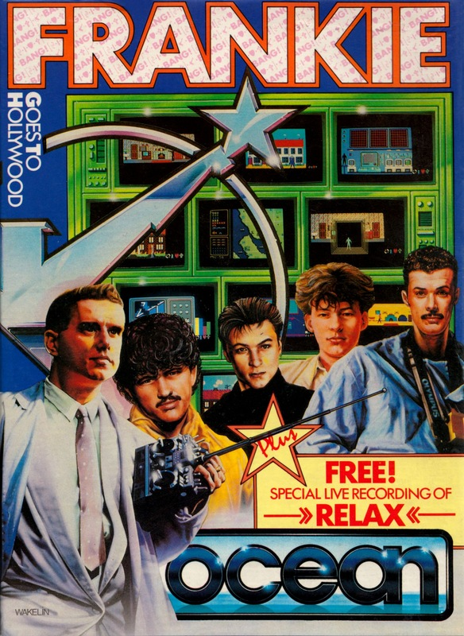
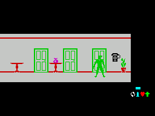
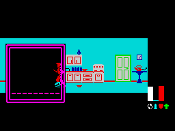
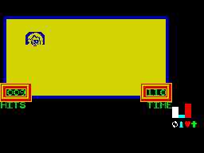

Frankie Goes to Hollywood


{kind=link}

| Publisher: | Ocean |
| Price: | £9.95 |
| Year: | 1985 |
| Source: | CRASH, Issue 19 |

Frankie Goes to Hollywood was previewed at length in the June issue of CRASH (otherwise known as 17). A great deal was written about this game so a brief introduction should suffice.
It’s not really fair to talk about targets or objectives in relation to Frankie Goes to Hollywood but at the end of the day your ultimate desire should be to reach the Pleasuredome. That’s going to be a problem because at the start of the game you play a dull and drab character, one of the great unwashed who leads a life that is special only because it is so drab. However, this dreary lifestyle is shattered by the discovery of a murder.

Perhaps this single event can be the beginning of the re-awakening, an event so horrible that only a ‘real’ person would want to discover why? and who? To be a ‘real’ person (only real personages are allowed into the Pleasuredome) you must prove your worth by making the most of the opportunities presented to you in your drab world of terraced houses and Radio One disc jockeys. But the terraced houses of today are filled with elements of the world, television and, of course, murder. Within the drab ordinary houses you are offered the means to escape to the Pleasuredome.
Throughout the game you control a character (not Frankie, he has already been to the Pleasuredome) which can be made to walk through doorways and so into houses and rooms, and can also be made to reach out and touch objects. This reaching action is later extended in some of the games to a firing action. At most times the player is able to call up an inventory of the items collected so that they may be used if the situation demands. A bottle of milk can be collected and later given to a cat for instance; a key can be kept in the same way. The inventory is displayed on a sub-screen, which opens out rather like the iris of your eye to reveal a window in the main screen; a hand within the window can be moved about until it is positioned over the object required.

Whenever you do something tremendous, like feeding the cat, another window will open onto the screen giving Frankie’s latest opinion on your performance in the form of pleasure points and an indication as to how much of a ‘real’ person you have become.
While you explore the houses you must touch the objects within. The touching action can open everyday items like chests, fridges and cupboards. Inside a fridge you may find a kipper or a floppy disc, these objects can be added to your inventory for future use but the number of items that can be carried is limited. You may find yourself forced to choose what to keep and what to get rid of. By touching other objects like a television or phone, you can sometimes open a doorway onto another level, when another type of ‘window’ opens on the main screen. If you decide to accept the challenge then move the character into the sub-screen, and it will expand to fill the whole screen and your character will be in a new location.
There are a number of mini-games incorporated into the main one, which are of a pretty simple format and are accessed by stepping into them. You may only have to bounce a pleasure pill through a tiny hole, or control Reagan while he spits at Andropov over a breakout-type wall. One game takes the form of a jigsaw puzzle; another requires you to solve a complex maze, yet another sub game requires you defend Liverpool by shooting German bombers as they fly over Merseyside.

For some sub-games you will need acquired objects, and in that sense there is a very strong adventure element. Pleasure points are awarded if you do well in the mini games, but if you lose or even decline to play at all by not walking into a windowed gamelet, then your pleasure rating will take a tumble. Failing to complete an element of the main game does not spell the end. This is a perpetual game — you will always get another chance because although you may have activated all of the ‘events’ in one room, sooner or later you will be able to go back and activate another, perhaps different event. The only problem that you will have to be wary of is using an object in an inappropriate place — if you do, you lose it and it may be some time before you will be able to replace it.
The game has many subtle features that can be easily missed. Associating the bottle of milk and the cat is one of the more obvious means of scoring some extra pleasure points. The intention of the player must be to achieve enough personality points to get to the Pleasuredome; only by doing good, playing and winning the games against evil and by solving the puzzles can you hope to qualify. Apart from the frequent reports from Frankie you can keep a check on your performance by looking at the four-bar graph on the side of the screen which shows how much of the pleasure equation you have managed to fulfil.
The game comes complete with an audio cassette which incorporates a new idea called Datatune. The player loads the game and then plays the audio cassette which will have music and a voice over describing how the game is played. Other music, a lot of it previously unpublished is included on the ‘B’ side.
CRITICISM
‘At last, the long awaited Frankie game has arrived and it has been worth the wait. Even though it so happened my copy had little in the way of instructions I found the game pretty easy to get into; it is a very playable game. The graphics are, as we have come to expect from Denton Designs, very good with plenty of attention paid to detail. I especially liked the room with Reagan and Andropov spitting at each other. The sound is limited to spot effects and a neat version of ‘Two Tribes’ before the game starts. Frankie looks set to be one of the best games this year with plenty of games and puzzles within the main game. I think it’s immense fun to play and very addictive — a sure winner.’
‘When I first loaded the game I was a little disappointed. The actual screens area is pretty small for the opening scenes of the game and the main character clashes a great deal with the background. However, after only a short time at the keyboard I grew to love the mystery of it all. I must confess to being anything but a Frankie fan even though some of the music appeals. I thought I would have a hard time understanding the game. Well I did, not because I don’t understand the music it’s simply that the game is very deep. What appears, at first sight, to be just a graphically neat game has a great deal under the skin and I am looking forward to being able to spend more time playing it. Great.’
‘Fun doesn’t begin to describe this experience. The initial impression is quickly bolstered by the seemingly never ending stream of new events. I have had the benefit of playing the game without the full instructions, it took ages to get an understanding of even the most elementary parts of the game but I don’t resent a moment. The fun I have had just exploring it and enjoying the surprises that are waiting round every TV set! I understand that the game is to come with verbal instructions on tape, my advice is to throw it away (well at least don’t put it on), JUST RELAX AND DO IT.’
COMMENTS
| Control keys: | Definable |
| Joystick: | Any |
| Keyboard play: | Probably better than using a joystick |
| Use of colour: | Excellent once you accept the attribute problems |
| Graphics: | Very imaginative, excellent |
| Sound: | Limited but nice opening tune |
| Skill levels: | One |
| Lives: | No limit |
| Screens: | Over 124 mind-boggling locations |
| General rating: | This is a highly innovative arcade/adventure that you must not be without |
| Use of computer: | 93% |
| Graphics: | 94% |
| Playability: | 93% |
| Getting started: | 95% |
| Addictive qualities: | 94% |
| Value for money: | 94% |
| Overall: | 94% |